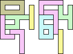

We say two sets of polyominoes X and Y are equal if they both tile the same shape. For example, 3+3 = 1+1+1+7 because of the following tilings:

We say two sets of polyominoes X and Y are equivalent if there is another set of polyominoes Z so that X and Z tile the same shape as Y and Z. For example, 3 ≈ 5 because of the following tilings:

What sets of digits are equal? What sets of digits are equivalent? If X ≈ Y, what is the smallest area Z with X + Z = Y + Z? Are every set of polyominoes with equal area equivalent?
| Area | Equivalency | Add | Tiling | |||||||||||||||||||||||||||||||||||||||||||||||||||||||||||||||||||||||||||||||||||||||||||||||||||||||||||||||||||||||||||||||||||||||||||||||||||||||||||||||||||||||||||||||||||||||||||||||||||||||||||||||||||
|---|---|---|---|---|---|---|---|---|---|---|---|---|---|---|---|---|---|---|---|---|---|---|---|---|---|---|---|---|---|---|---|---|---|---|---|---|---|---|---|---|---|---|---|---|---|---|---|---|---|---|---|---|---|---|---|---|---|---|---|---|---|---|---|---|---|---|---|---|---|---|---|---|---|---|---|---|---|---|---|---|---|---|---|---|---|---|---|---|---|---|---|---|---|---|---|---|---|---|---|---|---|---|---|---|---|---|---|---|---|---|---|---|---|---|---|---|---|---|---|---|---|---|---|---|---|---|---|---|---|---|---|---|---|---|---|---|---|---|---|---|---|---|---|---|---|---|---|---|---|---|---|---|---|---|---|---|---|---|---|---|---|---|---|---|---|---|---|---|---|---|---|---|---|---|---|---|---|---|---|---|---|---|---|---|---|---|---|---|---|---|---|---|---|---|---|---|---|---|---|---|---|---|---|---|---|---|---|---|---|---|---|---|---|---|
| 11 | 2 ≈ 3 | 1+7 | 
| |||||||||||||||||||||||||||||||||||||||||||||||||||||||||||||||||||||||||||||||||||||||||||||||||||||||||||||||||||||||||||||||||||||||||||||||||||||||||||||||||||||||||||||||||||||||||||||||||||||||||||||||||||
| 2 ≈ 5 | 1+1+7 |  (George Sicherman) 3 ≈ 5 | 1+7 |
12 | 0 ≈ 6 | 1+4+7+7 |  | (George Sicherman) 0 ≈ 1+7 | 1+7 | 
6 ≈ 1+7 | 1+3+7 |  (George Sicherman) 14 | 1+4 ≈ 7+7 | 1 | 
16 | 1+2 ≈ 4+7 | 1+7 | 
1+3 ≈ 4+7 | 7 |  (Bryce Herdt) 1+5 ≈ 4+7 | 1+7 |  (George Sicherman) 18 | 1+8 ≈ 2+7 | 1+1+1+4+7 |  (George Sicherman) 1+8 ≈ 3+7 | 1+6 | 
1+8 ≈ 4+4 | 1+1+1+6+7 |  (George Sicherman) 1+8 ≈ 5+7 | 1+6 | 
2+7 ≈ 4+4 | 1+1+1+7 |  (George Sicherman) 3+7 ≈ 4+4 | 1+7 |  (George Sicherman) 4+4 ≈ 5+7 | 1+1+1 |  (George Sicherman) 19 | 0+7 ≈ 1+1+4 | 1+1+7 |  (George Sicherman) 6+7 ≈ 1+1+4 | 1+7 |  (George Sicherman) 20 | 2+4 ≈ 7+8 | 1+1+1+1+3+6 |  (Bryce Herdt) 2+4 ≈ 1+1+1+1 | 7+7 |  (George Sicherman) 3+4 ≈ 7+8 | 1+1+6 |  (George Sicherman) 3+4 ≈ 1+1+1+1 | 7 |  (George Sicherman) 4+5 ≈ 7+8 | 1+1+6 |  (Bryce Herdt) 4+5 ≈ 1+1+1+1 | 7+7 |  (George Sicherman) 7+8 ≈ 1+1+1+1 | 1+1+3 |  (George Sicherman) 21 | 0+4 ≈ 1+1+2 | 1+3+7+7 |  (Bryce Herdt) 0+4 ≈ 1+1+3 | 7+7 |  (Bryce Herdt) 0+4 ≈ 1+1+5 | 1+7+7 |  (George Sicherman) 0+4 ≈ 7+7+7 | 1+1 | 
4+6 ≈ 1+1+2 | 1+1+1+7 |  (George Sicherman) 4+6 ≈ 1+1+3 | 1+7 |  (George Sicherman) 4+6 ≈ 1+1+5 | 1+7 |  (Bryce Herdt) 4+6 ≈ 7+7+7 | 1+1+1+7 |  (George Sicherman) 1+1+2 ≈ 7+7+7 | 1+7 | 
1+1+3 ≈ 7+7+7 | 1 | 
1+1+5 ≈ 7+7+7 | 3 |  (George Sicherman) 22 | 2+2 ≈ 3+3 | 1+1+7 |  (Bryce Herdt) 2+2 ≈ 3+5 | 1+1+1+7 |  (Bryce Herdt) 2+2 ≈ 4+8 | 1+1+3+6+7 |  (Bryce Herdt) 2+2 ≈ 5+5 | 1+1+1+1+7 |  (Bryce Herdt) 2+2 ≈ 0+1+1 | 1+1+1+7+7 |  (Bryce Herdt) 2+2 ≈ 1+1+6 | 1+1+1+3+7 |  (Bryce Herdt) 2+2 ≈ 1+1+1+7 | 1+1+7 |  (George Sicherman) 2+3 ≈ 4+8 | 1+1+6+7 |  (Bryce Herdt) 2+3 ≈ 5+5 | 1+1+1+7 |  (Bryce Herdt) 2+3 ≈ 0+1+1 | 1+1+1+7+7 |  (Bryce Herdt) 2+3 ≈ 1+1+6 | 1+1+7 |  (George Sicherman) 2+3 ≈ 1+1+1+7 | 1+1+7 |  (George Sicherman) 2+5 ≈ 3+3 | 1+1+7 |  (Bryce Herdt) 2+5 ≈ 4+8 | 1+1+6+7 |  (Bryce Herdt) 2+5 ≈ 0+1+1 | 1+1+1+7+7+7 |  (Bryce Herdt) 2+5 ≈ 1+1+6 | 1+1+7 |  (George Sicherman) 2+5 ≈ 1+1+1+7 | 1+1+7+7 |  (George Sicherman) 3+3 ≈ 4+8 | 1+1+6+7 |  (Bryce Herdt) 3+3 ≈ 5+5 | 1+1+7 |  (Bryce Herdt) 3+3 ≈ 0+1+1 | 1+7+7 |  (George Sicherman) 3+3 ≈ 1+1+6 | 1+1+7 |  (George Sicherman) 3+3 = 1+1+1+7 | - |
3+5 ≈ 4+8 | 1+1+6+7 |  (Bryce Herdt) 3+5 ≈ 0+1+1 | 1+1+1+7+7 |  (George Sicherman) 3+5 ≈ 1+1+6 | 1+1+7 |  (George Sicherman) 3+5 ≈ 1+1+1+7 | 7 |  (George Sicherman) 4+8 ≈ 5+5 | 1+1+6+7 |  (Bryce Herdt) 4+8 ≈ 0+1+1 | 1+1+1+1+3+7+7 |  (George Sicherman) 4+8 ≈ 1+1+6 | 1+7 |  (George Sicherman) 4+8 ≈ 1+1+1+7 | 1+1+3 |  (George Sicherman) 5+5 ≈ 0+1+1 | 1+1+1+7+7+7 |  (Bryce Herdt) 5+5 ≈ 1+1+6 | 1+1+7 |  (George Sicherman) 5+5 ≈ 1+1+1+7 | 1+7+7 | 
|
| Equation | Tiling | ||||
|---|---|---|---|---|---|
| 122 = 310 |  (George Sicherman) 136 = 420 |  (George Sicherman) 17 = 75 |  (George Sicherman) |
|
|
If you can extend any of these results, please e-mail me. Click here to go back to Math Magic. Last updated 9/20/14.